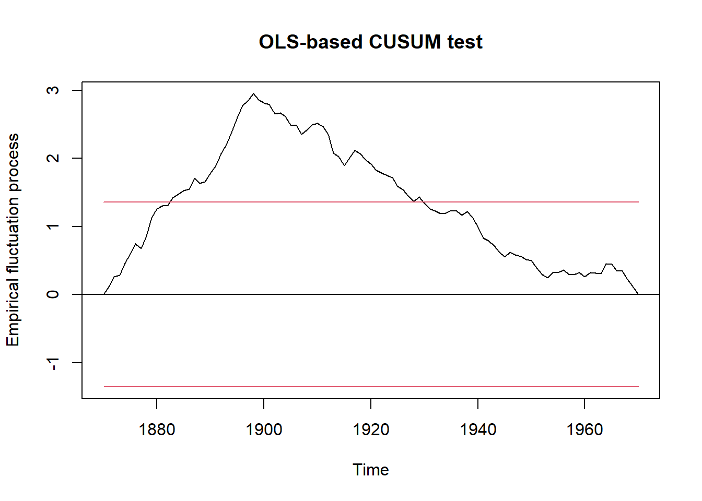

library("strucchange")
data("Nile")
plot(Nile)13-Identification of Breakpoints in Time Series
1 Introduction
The example is adapted from the help pages of R package strucchange, (Zeileis et al., 2002). The scientific question is to detect breakpoints where the hydrological regime of a river suddenly changed due to management changes, e.g. dam construction.
2 Methods
2.1 Dataset
The dataset is a hydrological time series of the discharge of the river Nile measured at Aswan in 108 m3 a-1. The origin of the data is described in Cobb (1978). It is contained in the strucchange package and can be loaded with data(Nile).
2.2 Data analysis
The data analysis is carried out in several steps:
- Statistical test if the time series contains breakpoints
- Identification of number and position of breakpoints
- Visualization of model results
- Diagnostic tests
3 Results
3.1 Test of existence of breakpoints
Here we use a so-called OLS-CUSUM test (ordinary least-squares regression, cumulative sums). The technical procedure is that we first define a null hypothesis for an empirical fluctuation process (efp). Here the model Nile ~ 1 means that we assume a constant mean value over time without trend. In case we allow for a linear trend, we could use Nile ~ time (Nile).
The ocus (OLS-CUSUM) object is then plotted and a structural change test (sctest) applied. The y-axis of the plot is scaled in units of standard deviations. The line shows the cumulative sum of deviations from the mean value. An monotonous increase of the line means that values are above the arithmetic mean, a decrease that they are below average. If the line exceeds the horizontal confidence bands, it indicates a structural change.
ocus <- efp(Nile ~ 1, type = "OLS-CUSUM")
plot(ocus)
sctest(ocus)
OLS-based CUSUM test
data: ocus
S0 = 2.9518, p-value = 5.409e-083.2 Identification of structural breaks
Function breakpointsis the main workhorse of the package. It iteratively scans the time series for candidate breakpoints, that can be printed. The BIC values returned by summary or and that are visible in the plot are then used for model selection. We select the model with the minimum BIC. Here we use again a model without trend (Nile ~ 1).
bp.nile <- breakpoints(Nile ~ 1)
summary(bp.nile)
plot(bp.nile)Task: find out how many breakpoints are necessary for an optimal model and at which time they occured.
3.3 Visualisation
In the following, we compare the model with N breakpoints with the null model fm0 without any breakpoint. In addition, we can also show indcate the confidence interval.
Task: replace xxxwith the correct number of breakpoints. It is also possible, to try other numbers of breakpoints to understand the algorith. Finally set it back to the optimal value.
fm0 <- lm(Nile ~ 1)
fm1 <- lm(Nile ~ breakfactor(bp.nile, breaks = xxx))
plot(Nile)
lines(ts(fitted(fm0), start = 1871), col = 3)
lines(ts(fitted(fm1), start = 1871), col = 4)
lines(bp.nile)
## confidence interval
ci.nile <- confint(bp.nile)
ci.nile
lines(ci.nile)The optional code uses a simpler and less fancy method for indicating the breakpoint(s).
plot(Nile)
dat <- data.frame(time = time(Nile), Q = as.vector(Nile))
abline(v = dat$time[bp.nile$breakpoints], col = "green")If we need a p-value, we can compare the two models with a likelihood ratio test:
## ANOVA test whether the two models are significantly different
anova(fm0, fm1)3.4 Diagnostics
Finally let’s check autocorrelation and normality of residuals. In case the breakpoint model was appropriate, autocorrelations should vanish. As a counterexample, we plot also the autocorrelation function of the null model (fm1).
Finally, we check residuals for approximate normality.
par(mfrow=c(2, 2))
acf(residuals(fm0))
acf(residuals(fm1))
qqnorm(residuals(fm0))
qqnorm(residuals(fm1))4 Discussion
Now we come back to the original objective and its implications. How many breakpoints were found in he time series, when and in which direction? What happened in the year(s) of the identified breakpoints? Read the article about the Aswan Dam in Wikipedia https://en.wikipedia.org/wiki/Aswan_Dam. Then look at the time series again:
- When you would expect structural breaks? Why?
- Hint: Looking closer, there is another breakpoint, not identified by the algorithm.
- How can this be explained?
5 References
Cobb, G. W. (1978). The problem of the Nile: Conditional solution to a changepoint problem. Biometrika, 65(2), 243–251. https://doi.org/10.1093/biomet/65.2.243
Zeileis, A., Leisch, F., Hornik, K., & Kleiber, C. (2002). strucchange: An R package for testing for structural change in linear regression models. Journal of Statistical Software, 7(2), 1–38. https://doi.org/10.18637/jss.v007.i02